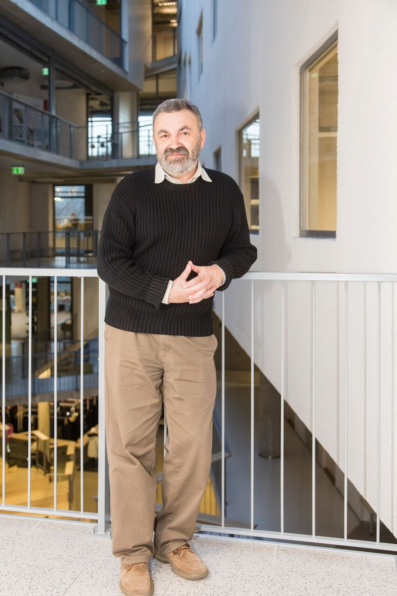

Камерное пространство внимательной работы с текстом
Текстура — пространство внимательной работы с авторским текстом. С фокусом на внутреннюю организацию произведения, ритм, паузу, напряжение фразы, логику дыхания текста и его смысловую структуру. Здесь Вам помогут научиться писать таким образом, чтобы читатель понимал произведение именно так, как оно задумано, а не как ему будет угодно.
Работа строится без публичности и без литературного соревнования — в режиме сосредоточенного профессионального разговора.
Встречи проходят онлайн. Обсуждаются тексты участников, предварительно присланные для чтения. Работать с присланными произведениями будем так: предварительно знакомимся с произведением (фрагментом), руководитель дает установку, после этого поочерёдно выступают все члены группы, затем выступает с ответным словом автор, а в конце подводим итоги обсуждения и даём рекомендации.
Разбор возможен только с согласия автора.
К участию приглашаются авторы, готовые к системной работе с собственным текстом и внимательной профессиональной критике.
Для рассмотрения заявки необходимо прислать тексты в объёме, который вы считаете репрезентативным для понимания вашей авторской манеры. Это может быть как один цельный текст, так и несколько фрагментов.
Решение о включении в группу принимается после рассмотрения присланных материалов.
Длительность одного курса — 8 месяцев.
Группа — 8–12 человек.
Отправляйте тексты на электронный адрес:
textura.voice@gmail.com
Пожалуйста, укажите в письме:
Тексты рассматриваются для публикации и обсуждения в рамках литературной мастерской «Текстура».

Борис Балясный — поэт, переводчик, редактор, литературный консультант. Автор шести книг стихов. Его произведения переведены на эстонский, итальянский и болгарский языки.
Подробная биографическая информация доступна: страница в Википедии .
Для подачи заявки и отправки текстов:
textura.voice@gmail.com
Если вам важно не только письмо как текст, но и работа с речью, звучанием, внутренней интонацией — возможно, вам будет интересен проект «Интонация» .
Отдельное направление индивидуальной работы с речью и интонацией.